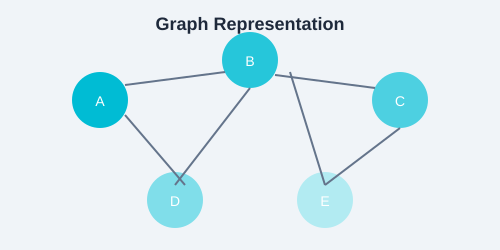

This chapter brings everything together. You will find example problems with solutions, exercises organized by difficulty, quiz questions, a syllabus outline, an 8-week study plan, interview preparation tips, and DSA certification paths.
The best way to learn DSA is to write code every day. Aim to solve at least one problem daily. Start with easy problems, then move to medium, then hard.

Example Problems with Solutions
Problem 1: Two Sum (Easy)
Given an array of integers and a target, return indices of two numbers that add up to the target.
def two_sum(nums, target):
seen = {}
for i, num in enumerate(nums):
complement = target - num
if complement in seen:
return [seen[complement], i]
seen[num] = i
return []
Time: O(n), Space: O(n).
Problem 2: Maximum Subarray (Medium)
Find the contiguous subarray with the largest sum (Kadane's Algorithm).
def max_subarray(nums):
max_ending = max_sofar = nums[0]
for x in nums[1:]:
max_ending = max(x, max_ending + x)
max_sofar = max(max_sofar, max_ending)
return max_sofar
Time: O(n), Space: O(1).
Problem 3: Merge K Sorted Lists (Hard)
Merge k sorted linked lists into one sorted list. Use a min-heap.
import heapq
def merge_k_lists(lists):
heap = []
for i, lst in enumerate(lists):
if lst:
heapq.heappush(heap, (lst[0], i, 0))
result = []
while heap:
val, list_idx, elem_idx = heapq.heappop(heap)
result.append(val)
if elem_idx + 1 < len(lists[list_idx]):
next_val = lists[list_idx][elem_idx + 1]
heapq.heappush(heap, (next_val, list_idx, elem_idx + 1))
return result
Time: O(N log k), where N is total elements and k is number of lists.
Exercises by Difficulty
Easy
Find the maximum element in an array.
Reverse a linked list iteratively and recursively.
Check if a string is a palindrome.
Implement binary search on a sorted array.
Find the first non-repeating character in a string.
Implement a stack using two queues.
Count the number of set bits in an integer.
Medium
Find the longest substring without repeating characters.
Clone a graph (BFS / DFS approach).
Check if a binary tree is a valid BST.
Find the LCA (Lowest Common Ancestor) of two nodes in a binary tree.
Implement Dijkstra's shortest path algorithm.
Flatten a binary tree to a linked list.
Detect a cycle in a linked list and find the start of the cycle.
Hard
Maximum path sum in a binary tree.
Serialize and deserialize a binary tree.
Median of two sorted arrays in O(log(m+n)) time.
Trapping rain water (two-pointer approach).
Word ladder (shortest transformation sequence).
N-Queens problem (backtracking).
Design a LRU (Least Recently Used) cache.
Quiz Questions
What is the time complexity of binary search? Answer: O(log n)
Which sorting algorithm has the best worst-case time complexity? Answer: Merge Sort / Heap Sort (O(n log n))
What data structure is used for DFS? Answer: Stack (recursive call stack)
What is the space complexity of Merge Sort? Answer: O(n)
When does a greedy algorithm fail? Answer: When the greedy choice property does not hold — local optima do not lead to global optimum.
What is the key difference between Prim's and Kruskal's algorithms? Answer: Prim grows vertex-by-vertex; Kruskal grows edge-by-edge using Union-Find.
State the Max-Flow Min-Cut theorem. Answer: The maximum flow value equals the minimum cut capacity.
Explain the difference between memoization and tabulation in DP. Answer: Memoization is top-down (recursion + cache); tabulation is bottom-up (iterative table filling).
CodeSignal — General Coding Assessment (GCA) used by companies.
Google Tech Dev Guide — Free learning path with curated resources.
Coursera / edX — Data Structures and Algorithms specializations (UC San Diego, Stanford, Princeton).
GitHub Copilot — Use AI-assisted coding to accelerate practice and learn patterns faster.
Certifications are helpful for building confidence and structuring your learning, but portfolio projects and mock interviews are just as important for landing a job.
Practice Task
Pick one easy, one medium, and one hard problem from the lists above. Solve all three without looking at any reference. Time yourself. If you complete the easy in under 10 minutes, the medium in under 25, and the hard in under 45, you are ready for most technical interviews.